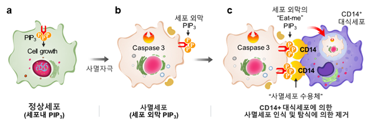

우리대학 의과대학 오병철 교수 연구팀이 세포의 생존과 사멸이라는 상반된 운명을 결정하는 핵심인자인 포스포이노시톨 포스페이트(PIP)의 새로운 기능을 발견하고, PIP를 활용한 탐식세포 특이적 약물전달체 개발의 핵심 작용 기전을 규명했다.
이번 연구결과는 국제학술지 ‘세포 사멸 및 분화(Cell Death and Differentiation, IF 15.828)’에 지난 1월 발표했으며 오병철 교수가 교신저자, 김옥희 연구교수가 제1저자로 이름을 올렸다.
사멸 세포는 세포 표면에 '나를 먹어주세요(eat me)'라는 신호를 내 보낸다. 이렇게 되면 대식세포와 호중구 등 탐식세포가 이를 인식하고 제거 된다. 조직에서 사멸 세포의 신속한 제거는 세포 내 잠재적인 염증반응과 항원 및 DNA에 대한 자가면역반응을 억제한다. 현재까지는 세포 내 수 많은 인지질 중 '포스파티딜세린(PS)'만이 사멸 세포의 표면으로 노출돼 먹어 없애라는 신호를 내보내는 것으로 알려졌다.
오 교수팀은 세포 내 다양한 신호전달에 중요한 인지질로 알려진 '포스파티딜이노시톨 포스페이트(PI(3,4,5)P3)'가 세포 사멸전 세포 밖으로 노출되면서 ‘eat me’ 신호를 낸다는 것을 알아냈다. 오 교수팀은 세포막 안에서의 포스파티딜이노시톨 포스페이트는 세포가 성장을 촉진하는 신호전달기능을 하지만 세포가 죽기 전 세포막 밖으로 노출되면 세포의 사멸을 표시하는 신호로 작용한다는 사실을 밝혔다 